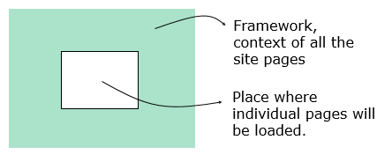

A Master Page is a panel that defines the layout and behavior common to the referenced application UI screens.
In other words, it specifies the framework or context and the behavior of the application UI screens that reference it.

- Centralize the design of your application, providing coherence and consistency.
- Less Coding.
- Better Performance (less generated code).
- Incremental Development (just changing a Master Page changes all the application UI screens that reference it).
- Each Master Page can include only one Content Placeholder control (otherwise, when saving the following error will be displayed: "Error: Only one Content Placeholder control is allowed").
- A Master Page can't contain a Parm rule (otherwise, at specification time the following message will be displayed: "spc0092: Master Pages do not support the parm() rule").
- A Master Page cannot be Main (the Main program property disappears for Master Pages).
- You can't call a Master Page from another object like from any GeneXus object (otherwise, at specification time the following message will be displayed: "spc0008 Events(6): Call to program Master Web Panel that cannot be generated."). To assign a Master Page, you have to set a property of an object with UI with the name of the desired Master Page.
Since GeneXus 17 the Master Page concept was divided into two types of objects:
|